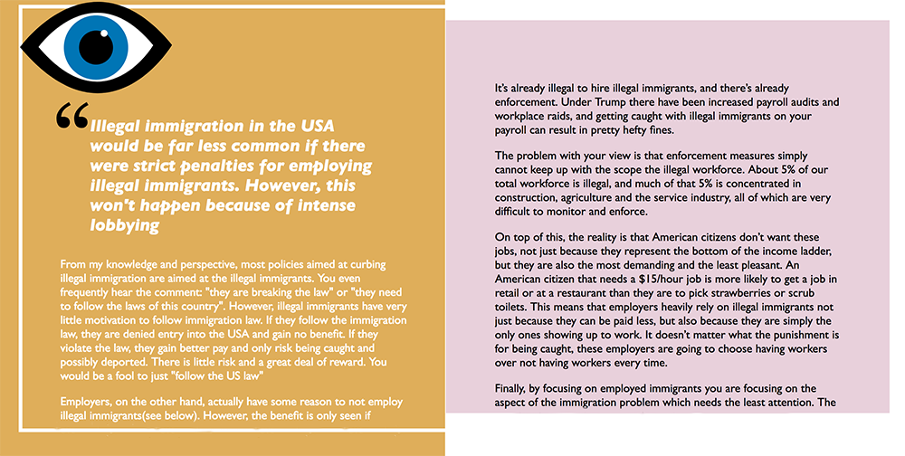

Built by Lina Zuluaga | 2019 | Mural Nomad ©
A personal favorite, Change My View Reader was built based on the popular SubReddit page "Change My View" where we built a Mobile-First reader of views and opinions using RESTful API's to fetch the information which we organized and displayed in a fresh way to show the different sides of the original project. Search the content of the site to find opinions from "cheese" to "abortion" topics to read and maybe change your mind about. Check out CMV
For each of my personal and client projects I start by drawing out my ideas, to make sure I am understanding the project's needs. Here are some of those drawings from my sketchbook:
Go to section 3Experience working across interaction, UI, and graphic design • Experience with user research and design analysis methods • Experience with advanced analytics and data visualization • Strong, highly refined, clean visual design sense • Experience in Human Factors Engineering and User Experience Engineering • Strong understanding of responsive design systems • Knowledge of the capabilities and limitations of HTML, CSS, and Javascript • Team player, able to maintain flexibility to get things done in a fast paced customer-focused environment • Common sense approach to problem solving and delivery• Experience in working closely with business partners • Experience in responsive design • Experience developing prototypes in appropriate technologies including mobile apps • Experience dealing with critical deadlines in a dynamic, rapidly changing environment • Demonstrated history of learning more and doing better over time • Experience collaborating with front-end development teams
Education: Bachelors in graphic design, visual communications and technology, interaction design and engineering.
JavaScript, HTML, CSS, React, Redux, Nodejs, OOP, Ruby, Rails, npm, webpack, RSpec, Jasmine, DOM manipulation, Bootstrap, SASS, Web API and RESTful service, Debugging, SVGs, Single Page Applications
Design & Production: Photoshop, Illustrator, InDesign, Sketch, Web Content Management System knowledge (Adobe CQ), Responsive Design, Wireframing, InVision, Adobe Creative Suite
Back to section 1